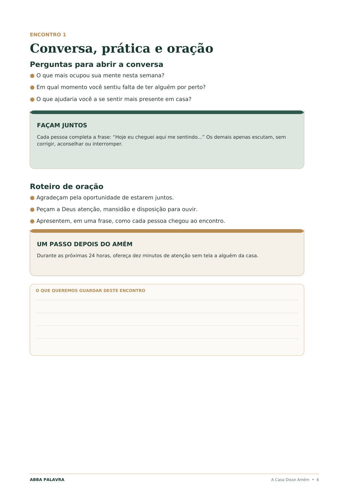
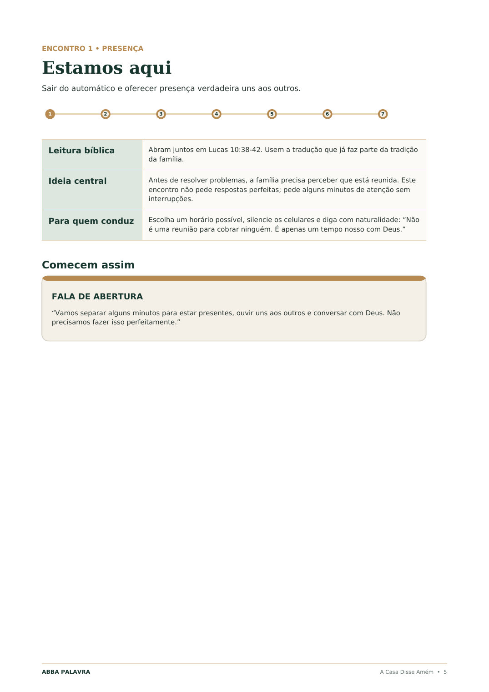
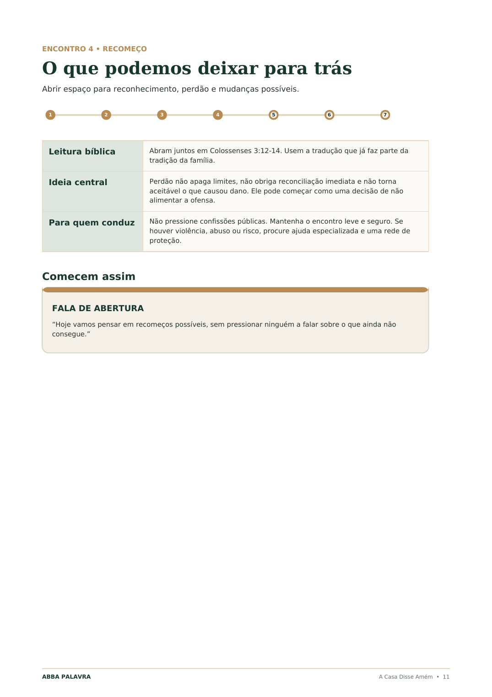

01 Uma jornada de 7 encontros
Talvez sua família não tenha perdido o amor.
Talvez tenha perdido uma forma segura de conversar.
Reúna sua família e permita que uma Terceira Voz reabra o caminho para a presença, a escuta e a oração dentro da sua casa.
10–15 min por encontro
100% digital e imprimível
7 dias de garantia


Descubra o que mudou
02 A distância que ninguém percebe
Vocês dividem a mesma casa.
Mas ainda dividem o que sentem?
A rotina não afasta uma família de uma vez. Ela ocupa pequenos espaços: a refeição apressada, o assunto adiado, a pergunta que ninguém fez.
01
A verdade é que muitas famílias não perderam o amor.
Perderam o ritual de voltar umas para as outras.
03 O mecanismo único
Quando duas vozes se defendem, entra a Terceira Voz.
Quando um assunto importante surge, uma pessoa tenta explicar e a outra se sente acusada. A conversa fica presa entre “o que eu quis dizer” e “como você me fez sentir”.
Em cada encontro, um texto bíblico entra no centro da conversa como uma voz que não pertence ao pai, à mãe ou aos filhos. Ninguém precisa vencer. Todos se colocam diante da mesma Palavra.
“A Palavra abre o caminho. O roteiro conduz a conversa. A oração transforma o encontro em um passo de reconexão.”
VOZ 1O que eu
queria dizer
queria dizer
VOZ 2Como eu
me senti
me senti
A TERCEIRA VOZA Palavra
entre nós
entre nós
Um terreno comum
para voltar a conversar
para voltar a conversar
retira o foco da acusação
abre uma conversa segura
diminui a defesa
transforma preocupação em intercessão
leva a mudança para a rotina
04 A sequência dos encontros
Sete barreiras.
Sete movimentos de volta.
Cada texto foi escolhido para conduzir uma conversa específica. A ordem leva a família da presença à continuidade, sem exigir conhecimento teológico.
01Lucas 10:38–42
Estamos aqui
Da distração para a presença.
Guardar as telas, diminuir o ritmo e perceber quem está diante de nós.
02Salmo 103:1–5
Ainda temos motivos
Da indiferença para a gratidão.
Reconhecer gestos, memórias e cuidados que a rotina costuma esconder.
03Tiago 1:19
Eu quero ouvir você
Da interrupção para a escuta.
Criar um espaço em que falar não seja o começo de outra discussão.
04Colossenses 3:12–14
O que deixamos para trás
Do ressentimento para o recomeço.
Reconhecer mudanças necessárias sem forçar exposições ou perdão instantâneo.
05Gálatas 6:2
Vamos cuidar
Do isolamento para o cuidado.
Transformar preocupações silenciosas em presença e ajuda concreta.
06Provérbios 16:3
Os sonhos desta casa
Da falta de direção para o propósito.
Compartilhar sonhos e escolher os valores que a casa deseja cultivar.
07Deuteronômio 6:4–9
Apenas o começo
Da inconstância para a continuidade.
Criar um próximo passo possível, sem transformar a oração em cobrança.
05 Abra o material
Não é um PDF para guardar.
É um encontro pronto para viver.
Veja páginas reais da jornada. Clique para ampliar e perceber como cada parte conduz quem nunca liderou um momento em família.
10minutos
01 Abra
02 Converse
03 Ore
06 Imagine o primeiro encontro
Você abre o roteiro.
A conversa já tem por onde começar.
- 01
Escolha um momento possível e guarde as telas.
- 02
Leia a passagem indicada na Bíblia da sua família.
- 03
Faça uma pergunta e escute sem precisar resolver tudo.
- 04
Termine com uma oração simples e um gesto para a semana.
Você não precisa pregar. Não precisa encontrar palavras bonitas. Precisa apenas preparar o lugar.
07 Tudo pronto para usar
O encontro termina.
As ferramentas continuam trabalhando.

Jornada dos 7 Encontros
Leitura, reflexão, perguntas, dinâmica, oração e ação prática em cada encontro.
Incluída nos dois kitsDiário da Nossa Casa
Pedidos, respostas, decisões e memórias que não devem se perder.
36 cartas Puxa a Cadeira
Perguntas para quando a família quer conversar, mas não sabe por onde começar.
O Pote do Amém
Cartões para tornar pedidos, gratidão e respostas de oração visíveis dentro da casa.
Quando Só Um Quer Começar
Convites e caminhos para iniciar sem cobrança, culpa ou pressão espiritual.
Depois do Sétimo Amém
21 práticas breves para transformar o primeiro passo em continuidade.
08 Feito para famílias reais
Não importa se vocês nunca fizeram isso antes.
A Casa Disse Amém é um material cristão, bíblico e interdenominacional. Pode ser usado por famílias de diferentes tradições cristãs.
✓ Casais com ou sem filhos
✓ Casas com crianças ou adolescentes
✓ Famílias que perderam o hábito de orar
✓ Quem deseja começar sem saber conduzir
✓ Quem dispõe de apenas 10 a 15 minutos
✓ Quem precisa voltar depois de uma tentativa frustrada
09 Escolha como começar
Um pequeno investimento.
Um lugar preparado dentro da sua casa.
ESSENCIAL
Kit Padrão
Para começar hoje com os sete encontros completos.
Pagamento únicoR$9,70
- Jornada principal com 7 encontros
- 20 páginas prontas para imprimir
- Leituras, perguntas, orações e ações
- Diário da Nossa Casa
- 36 cartas Puxa a Cadeira
- O Pote do Amém
- Guia contra a resistência
- Plano de continuidade de 21 dias
A EXPERIÊNCIA COMPLETA
RECOMENDADO
Kit Completo
Para começar, envolver e ajudar a família a continuar.
Pagamento únicoR$24,70
- Jornada principal com 7 encontros
- Diário da Nossa Casa
- 36 cartas Puxa a Cadeira
- O Pote do Amém
- Quando Só Um Quer Começar
- Depois do Sétimo Amém: 21 dias
- 59 páginas de recursos visuais
◆ Compra protegida↯ Acesso imediato↺ Garantia de 7 dias⌂ Feito para usar em casa
7DIASGARANTIA
10 O risco continua sendo nosso
Comece com tranquilidade.
Você tem 7 dias após a compra para conhecer o material. Se decidir que ele não faz sentido para sua família, solicite o reembolso dentro desse período.
Garantia do Sétimo Amém
Faça os sete encontros dentro de 30 dias. Se a jornada não criar nenhum momento real de conversa, escuta ou aproximação, envie o calendário preenchido e solicite a devolução do investimento. Você não precisará revelar conversas íntimas ou expor sua família.
11 Antes de preparar o lugar
Perguntas que podem estar passando pela sua cabeça.
Ainda ficou alguma dúvida? Revise as respostas ou escolha o kit para começar.
Preciso saber conduzir um estudo bíblico?+
Não. Cada encontro traz a passagem, a ideia central, as perguntas, a dinâmica e o roteiro de oração. Você apenas acompanha a sequência.
E se alguém não quiser participar?+
Não pressione. O Kit Completo inclui o guia “Quando Só Um Quer Começar”, com convites prontos e formas de iniciar respeitando o tempo de cada pessoa.
Serve para católicos e evangélicos?+
Sim. O conteúdo é cristão, bíblico e interdenominacional. Cada família lê as passagens na tradução bíblica que já utiliza e preserva sua própria tradição.
Casais sem filhos podem usar?+
Sim. As perguntas e práticas funcionam para casais, famílias com filhos, parentes adultos e diferentes configurações familiares.
Preciso imprimir todo o material?+
Não. A jornada pode ser acompanhada no celular ou computador. Cartas, cartões e páginas de registro oferecem uma experiência melhor quando impressos.
Quanto dura cada encontro?+
Em média, entre 10 e 15 minutos. O próprio material ensina uma versão reduzida para os dias em que a família tiver apenas cinco minutos.
Este material substitui terapia ou aconselhamento?+
Não. Ele cria oportunidades de diálogo e oração, mas não substitui proteção, orientação pastoral responsável, apoio psicológico ou assistência especializada.
12 O primeiro lugar já está preparado
Talvez a próxima conversa importante da sua família comece com uma frase simples:
“Puxa a cadeira.Quero começar o primeiro encontro
Hoje a gente vai ficar um pouco junto.”
Acesso imediato • Material digital • Garantia de 7 dias